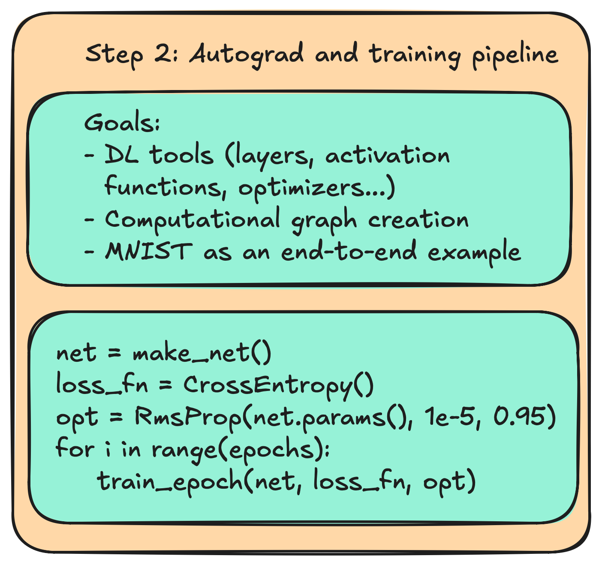
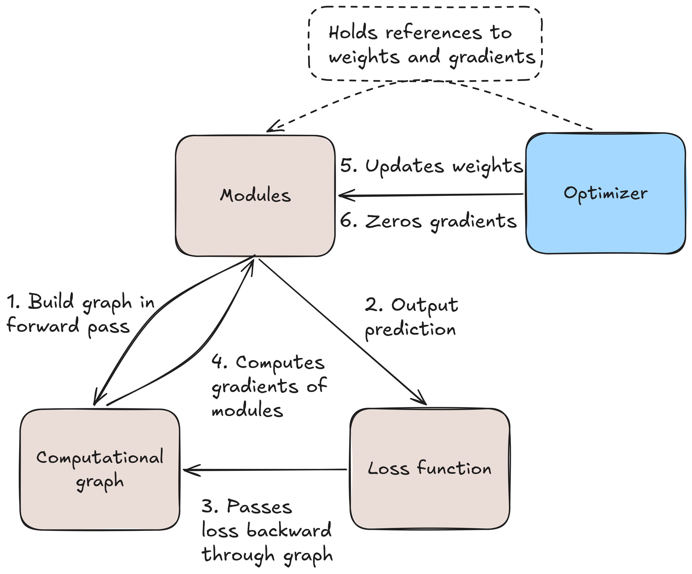
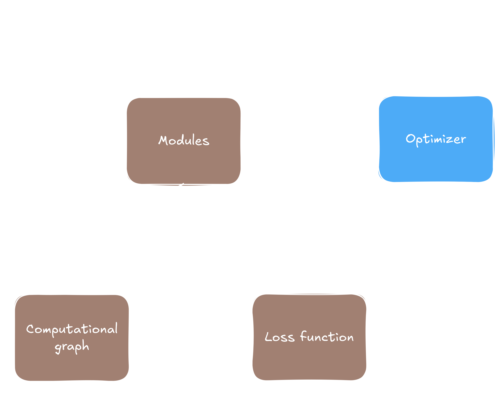
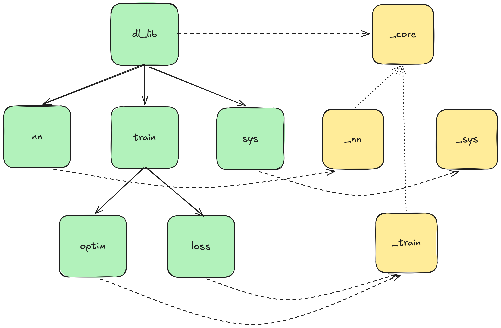
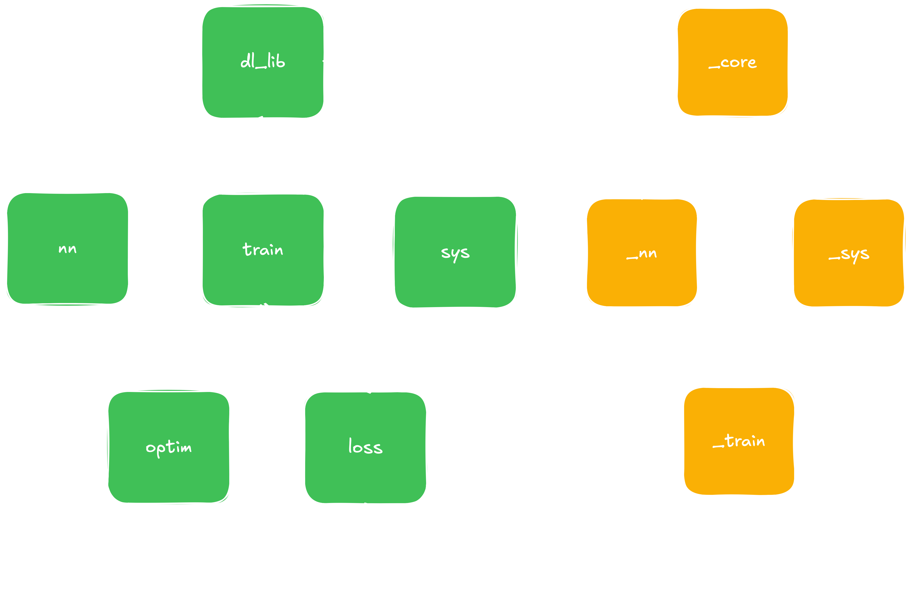

This is the second half of Part 2 of the PyTorch demystified series. In
part 2a we built a functional autograd engine
that dynamically constructs a computational graph as tensors perform operations. We accompanied it by
implementing backpropagation, enabling us to pass gradients through the computational graph and right
into the nodes where they belong.
Part 2b of this part of the series is turns that engine into a full training loop. We will cover
activation functions, a feedforward layer, some loss functions, two popular optimizers, and a Python
frontend to tie it all together. Lastly we will import our backend into Python and show its
capabilities through a training loop, training and evaluating a full MNIST example. The
rough goal, as outlined at the start of part 2a, is shown again in the figure to the right or
below this text.

Adding deep learning modules
In part 2a we painstakingly waltzed through calculus, linear algebra, memory management, algorithms,
and architectural decisions. If our goal is a full training loop, then we already walked most of the mountain
and now get to enjoy our view, as most of what comes
next becomes a simple plug and play into what we established in part 2a. We will add a few staples of every
good deep learning framework. I will avoid repeating myself, and instead focus on what's interesting, after
one small slight warmup to establish the routine.
Activation functions
We start off by implementing a few activation functions. Neural networks consist of a more or less heterogeneous
mix of components that form a graph, as we have seen earlier. To bring all those components under one single roof
we use the inheritance model one more time, where we make all those a module via:
We once again suppress copies actively to avoid accidents. More interestingly though
we have two call-operators, one for inference and one for training, and one getter
that returns an std::vector of pointers to the parameters of the base class. Since not every
module will have parameters we can give it default behavior. Alternatively we could make it
abstract, forcing ourselves to implement it and thus to avoid any mistake that happens from
a forgotten override, but for now we stick with this, since I am a solo developer and also
gotta think about how to make some bread eventually. An example of a derived class is
the all-time famous ReLU function.
Example: ReLU activation function
// src/backend/module/activation_functions/relu.h
namespace module {
class ReLu final : public ModuleBase {
public:
ReLu() = default;
Tensor operator()(const Tensor& t) const override;
std::shared_ptr<Tensor> operator()(const std::shared_ptr<Tensor>& t) const override;
};
}
// src/backend/module/activation_functions/relu.cpp
using namespace std;
using namespace module;
Tensor ReLu::operator()(const Tensor& t) const {
auto res = t.createDeepCopy();
for(tensorSize_t i = 0; i < t.getSize(); i++){
constexpr ftype zero = 0;
if(t[i] < zero){
res.set(zero, i);
}
}
return res;
}
shared_ptr<Tensor> ReLu::operator()(const shared_ptr<Tensor>& t) const {
auto res = make_shared<Tensor>((*this)(*t));
if(t->getRequiresGrad()){
res->setCgNode(make_shared<cgraph::ReLuNode>(t));
assert(res->getRequiresGrad());
}
return res;
}
Because the module functions themselves will always be part of a computational graph
we ensured that they could be the wrapper we introduced for the tensor's implicitly.
The overload taking the raw tensor does the math, and the overload taking the shared
pointer wraps the computational graph around it.
Clean architecture, and everything is where you would look for it (at least I as the
designer hope so). I also note that once again I made use of the final keyword to
enforce flat hierarchies and thus less indirections.
When it comes to the function of the ReLU forward pass there's no
surprise here, and neither for the backward function:
// src/backend/computational_graph/activation_functions/relu_node.h
namespace cgraph {
class ReLuNode final : public GraphNode { // we derive from the same class as the tensor-op nodes
public:
explicit ReLuNode(std::shared_ptr<Tensor> t)
: GraphNode({std::move(t)}) {}
std::vector<std::shared_ptr<Tensor>> backward(const Tensor& upstreamGrad) override;
};
}
// src/backend/computational_graph/activation_functions/relu_node.cpp
using namespace std;
using namespace cgraph;
vector<shared_ptr<Tensor>> ReLuNode::backward(const Tensor& upstreamGrad) {
assert(!upstreamGrad.getRequiresGrad());
constexpr ftype zero = 0.0;
auto res = make_shared<Tensor>(upstreamGrad.getDims(), upstreamGrad.getDevice(), false);
const auto& parent = parents[0];
for(tensorSize_t i = 0; i < upstreamGrad.getSize(); i++){
res->set((*parent)[i] > zero ? upstreamGrad[i] : zero, i);
}
return {res};
}
That concludes our activation functions. Most of the other ones follow the same path.
In the following optional block we take a closer look at the sigmoid and softmax
activation functions, as those two come with numerical instabilities we need to deal with,
but also opportunities for some algorithmic optimizations.
For the reader who is happy to skip it, rest assured that it won't take away from anything
you read further down the line.
Optional: Considerations for sigmoid and softmax
Sigmoid activation function
Now that we know where to plug in our activation functions we can go to
the interesting ones. I will not repeat the architecture itself, but instead go
right into the implementation of the forward pass. As a reminder, we implement
$$\sigma(x) = \frac{1}{1 + e^{-x}}$$
The associated source code looks like the following:
// src/backend/module/activation_functions/sigmoid.cpp
using namespace std;
using namespace module;
Tensor Sigmoid::operator()(const Tensor& t) const {
auto res = t.createEmptyCopy();
constexpr ftype one = 1.0;
auto compute = [](ftype x){
if(x >= 0){
return one / (one + exp(-x));
}
auto e = exp(x);
return e / (one + e);
};
for(tensorSize_t i = 0; i < t.getSize(); i++){
res.set(compute(t[i]), i);
}
return res;
}
We have split this up into two parts, one where $x \ge 0$, resulting in the standard formula,
and one where $x < 0$. In the latter case we transform the formula to
$$\sigma(x) = \frac{1}{1 + e^{-x}} \cdot \frac{e^x}{e^x} = \frac{e^x}{e^x + 1}$$
The reason for that is that with negative values for $x$ the term $e^{-x}$ grows large very quickly,
threatening us with numerical fallouts like NaN values and overflows. Before even looking into
the ABI we reduced all the error handling to an alternate execution that incurs no performance
penalties compared with the default formula. The backward pass looks as follows:
// src/backend/computational_graph/activation_functions/sigmoid_node.h
namespace cgraph {
class SigmoidNode final : public GraphNode {
private:
// cache the result of the forward function
std::shared_ptr<const Tensor> sigmoid;
public:
// ...
};
}
// src/backend/computational_graph/activation_functions/sigmoid_node.cpp
using namespace std;
using namespace cgraph;
vector<shared_ptr<Tensor>> SigmoidNode::backward(const Tensor& upstreamGrad) {
assert(!upstreamGrad.getRequiresGrad());
constexpr ftype zero = 0.0;
auto res = make_shared<Tensor>(upstreamGrad.getDims(), upstreamGrad.getDevice(), false);
// s is result from forward pass sigmoid
auto derivative = [](ftype s){
return s * (1 - s);
};
for(tensorSize_t i=0; i<upstreamGrad.getSize(); i++){
res->set(derivative((*sigmoid)[i]) * upstreamGrad[i], i);
}
return {res};
}
By giving it a pointer to the result of the forward pass we make use
of the simplification of the derivative via
$$\frac{d}{dx}\sigma(x)=\sigma(x)(1-\sigma(x))$$
This is already an optimization in and of itself.
Softmax activation function
Similar to the sigmoid function we just saw, softmax can suffer from
numerical instabilities. A soft reminder of its basic shape:
$$softmax(x_i)=\frac{e^{x_i}}{\sum_j e^{x_j}}$$
The crux, just as before, lies in the exponentials, more specifically
in the sum of all of them. We bypass this by first finding the max value
via $x_{max} = max_j{x_j}$, and the we normalize the exponents according
to
$$softmax(x_i)=\frac{e^{x_i}}{\sum_j e^{x_j}} \cdot \frac{e^{-x_{max}}}{e^{-x_{max}}} =
\frac{e^{x_i - x_{max}}}{\sum_j e^{x_j - x_{max}}}$$
I will spare you the code of this, but feel free to look into the source code.
Instead I will just give you the simplification for the gradient, similar to what we did
for the sigmoid activation, so that we still have breath for the remainder of this post entry.
Because unlike sigmoid the softmax function gives us a distribution,
which we represent as a vector $y = (y_1, y_2, ..., y_n)^T$, $y_i = softmax(x_i)$, we
get a Jacobian matrix instead of a single value. Its entries are
$$J_{i, j} = \left \{ \begin{matrix} y_i (1 - y_j) \text{ iff } i=j \text{,} \\
-y_i y_j \text{ else} \end{matrix} \right \}$$
The implementation then is very straight forward once the SigmoidNode class implementing
the backward function has access to the result of the forward pass.
Feedforward-layer
Similar to the activation functions, the feedforward-layer is a module.
Unlike the activation functions it has weights to update. The header definition goes as
follows:
// src/backend/module/layers/ff_layer.cpp
using namespace std;
using namespace module;
using namespace utility;
Tensor FfLayer::operator()(const Tensor& input) const {
auto res = input.matmul(*weights);
if(useBias){
res = res + *bias;
}
return res;
}
std::shared_ptr<Tensor> FfLayer::operator()(const std::shared_ptr<Tensor>& input) const {
auto res = cgraph::matmul(input, weights);
if(useBias){
res = cgraph::add(res, bias);
}
return res;
}
What is new here is that the shared pointer overload this time does not
function as a mere wrapper around the pure tensor reference overload. The
reason is that the operations we perform, a matmul and an add, already
create a graph on their own. We thus have to have two functions for now
if we want to bank on existing code. Alternatively we could write an
extra kernel for the feedforward class, but we don't have to do unnecessary
work when no one calls for it. Plus on the bright side we actually save
ourselves quite some time, since we don't have to implement a backward node
by hand now.
Optional: The weight initialization problem
One detail that I omitted above, but that might be interesting for you to see in this
class though is hidden in the constructor:
If we take a look here you'll find a concept I have not touched upon
so far at all, namely the InitializerBase and the NormalXavierInitializer.
When creating layers such as feedforward layers, one question that is important
to ask is how to initialize the weights. A question which has itself been subject
to research (see e.g. this paper), and which I stumbled upon myself in this project.
Turns out a simple Gaussian initialization centered around zero and with a standard deviation
of one cannot even solve a simple XOR problem reliably.
Anyway, in file src/backend/utility/initializers.h I define a few initializers,
but so far I do not really expose them. It would just be footwork, but for the sake of
putting my money where my mouth is I have skipped this yet. Feel free to contribute
to my main branch through a merge request (coding and testing should take less than one
hour - don't forget to implement unit tests), or simply wait for me to continue my work
and reach a point where I am forced to expose it for flexibility reasons. For now the
hardcoded version I am using works just fine.
Loss functions
With that we leave the space of modules and enter the world of training utilities. Loss
functions are their own separate class, hence we introduce another base class:
This could actually be the first time in this whole process that we use inheritance,
though it wasn't strictly necessary. I just happened to start that way because
I wanted to write a generic training loop in C++ (and I did) bypassing all the steps
Python gives us for better speed. But if you do not use this or are happy with hardcoding
your training loops you might as well take this out. However, the performance penalty
here compared with the rest is also minimal, and one would only be interested in optimizing
this part of the code for the very last few drops of performance. For us that means
optimizing this away now is premature, and who knows where else we will want to use the
loss functions. So we will leave them as is.
Anyway, the implementation of most loss functions is straight forward, so I will spare
you that. The following optional section is a brief dive into two more optimizations to
be had here, once again with the sigmoid function and the softmax function.
Optional: Two loss function optimizations
Binary cross-entropy loss with sigmoid
A pattern that clearly often occurs in deep learning pipelines is a sigmoid output layer (for binary outputs for example),
accompanied by a binary cross-entropy (BCE) loss function. Remember the definition of BCE through
$$BCE(y, \hat{y}) = \hat{y}log(y) + (1 - y)log(1-\hat{y})$$
Alternatively written in code this becomes
// src/backend/training/loss_functions/bce_loss.cpp
auto bce = [](ftype y, ftype ypred){
constexpr ftype epsBce = 1e-9;
return y * log(std::max(ypred, epsBce)) + (1 - y) * log(std::max(1 - ypred, epsBce));
};
This works, but we have to compute $\hat{y}$ first. However, given how the log and the exponent in sigmoid interact
we can shorten it into an integrated loss function that computes the loss directly (if this was a GPU implementation,
where functions are called kernels, we would call this step kernel fusion - we will come back to this in a later post).
Plugging $\hat{y} = \frac{1}{1+e^{x}}$ into the formula for the BCE gives us the following in code, where we once again
did some restructuring for both $x < 0$ and $x \ge 0$, this time in the shape of an std::abs() operation. Here it is:
// src/backend/training/loss_functions/bce_sigmoid_loss.cpp
auto bceSimplified = [](ftype y, ftype logit){
constexpr ftype zero = 0;
return std::max(logit, zero) - logit * y + log(1 + exp(-std::abs(logit)));
};
A logit is simply the argument $x$ passed to the sigmoid (and similar in case of a softmax).
Cross-entropy loss with softmax
Just as in the case of the sigmoid, we often find the softmax in combination with the
cross-entropy (CE) loss function. CE is defined as
$$CE(y, \hat{y}) = \sum_i y_i log(\hat{y}_i)$$
Plugging in the softmax as we've come to love it earlier leaves us with the following implementation:
// src/backend/training/loss_functions/crossentropy_softmax_loss.cpp
// ...
ftype lsum = 0;
for(tensorSize_t i = 0; i < logits.size(); i++){
lsum += tmp[i]; // tmp[i] = exp(x[i]) - maxV
}
lsum = log(lsum);
for(tensorSize_t i = 0; i < logits.size(); i++){
if((*y)[i] > 0){ // y either zero or one
loss += -(*logits)[i] + maxV + lsum;
}
}
// ...
Just like we did with the softmax itself, we first compute the max-value, and adjust
the exponents accordingly for numerical stability. The rest follows from the definitions.
(I should mention that I simplified this a little compared with what you find in my code.
In my code I deal with batches as well, which I took out in the snippet above to avoid
confusion and keep it simple).
Optimizers
Now we have got everything together for a training loop. The only thing that is really missing is the optimizers
tying together what we just worked out. We once again give it an abstract base class, and once again that might
not have been necessary, but here we are. The class goes as follows:
Unsurprisingly it has a learning rate lr, and it needs to hold references to the parameters
it is expected to update. The virtual step()-function is the distinguishing branch in between the
optimizers, and all of them need a way to zero out gradients. We can now implement several
optimizers. Given that with the API and the backend wrapped up this is a rather mechanical
job now I made this another optional section below. In this one I exemplify via RMSProp, since
this is the one we will be using in our example.
Optional: Implementing RMSProp
To start off with RMSProp, we take a look at its definition in our C++ backend. It goes as follows:
The moving average here comes from how the optimizer works. Apart from the
gradients it maintains a field of moving averages of squared gradients through
$$E[g^2]_t = \gamma E[g^2]_{t-1} + (1 - \gamma)$$
$\gamma$ is the decay rate const ftype decay;. The update rule then becomes
$$\theta_{t+1} = \theta_t - \frac{\eta}{\sqrt{E[g^2]_t + \epsilon}}$$
Here, $\theta_t$ are the weights at time step $t$, $\eta$ is the learning rate, and
$\epsilon$ is a constant added for numerical stability. I note here that once again I found
out that the value of $\epsilon$ has a large impact on the whole optimizer. A good value is
$\epsilon = 1e-8$. I started out with 1e-9, and my training loop did not work, and neither did
a value of 1e-7.
Anyway, we do have to track the moving averages of each gradient, so I decided to go with
a map std::unordered_map<Tensor*, std::unique_ptr<Tensor>> movingAvg; mapping
a tensor to its moving averages. Updating the weights once then looks like the following:
void RmsPropOptimizer::step() {
constexpr ftype eps = 1e-8;
for(const auto& param: params){
auto tPtr = param.get();
const auto gPtr = tPtr->getGrads().get();
auto vPtr = movingAvg[tPtr].get();
// update moving avg
if(vPtr!=nullptr) { // hot path
for(tensorSize_t i = 0; i < gPtr->getSize(); i++){
auto g = (*gPtr)[i];
auto update = decay * (*vPtr)[i] + (1 - decay) * g * g;
vPtr->set(update, i);
}
}
else { // init loop
movingAvg[tPtr] = make_unique<Tensor>(tPtr->getDims(), tPtr->getDevice(), false); // create empty tensor
vPtr = movingAvg[tPtr].get();
for(tensorSize_t i = 0; i < tPtr->getSize(); i++) {
auto g = (*gPtr)[i];
vPtr->set((1 - decay) * g * g, i);
}
}
// update gradients
for(tensorSize_t i = 0; i < tPtr->getSize(); i++) {
auto update = (*tPtr)[i] - lr * (*gPtr)[i] / ((*vPtr)[i] + eps);
tPtr->set(update, i);
}
}
}
Quick overview: How the training components interact
With the optimizers in place we can now conclude our training loop. We will implement
it in Python later, but this is probably a good point to sketch out what it will look
like, so we can understand our design decisions a little better.

Illustration of one training loop. Shows how the components we just implemented
integrate with each other.

Illustration of one training loop. Shows how the components we just implemented
integrate with each other.
In summary, we start out with a network and an optimizer, and giving the optimizer access to the networks
parameters to update. Upon a forward pass we build a graph in the background, propagate gradients backward
through it, giving each parameter an associated gradient. The optimizer then updates the weights and zeros
out the gradients. To make full use of that we gotta bring it to Python now.
Updating the Python frontend
Python package structure
Lucky for us, we do not have to do too much in the frontend when updating it. Our tensor functions are
already there, the graph remains invisible to the user, and what is missing is mostly the new modules we created
and the translation we have to do now that we added more types. Staying true to how we structured the backend we
create the following structure for the Boost.Python binding:
py_core contains the tensor and all its operations. py_nn has the modules we need for building networks, py_sys some
global setters, and py_train has training utilities like the loss-functions and the optimizers. Each of these .cpp
files contains a list of methods to expose. For instance, py_nn.cpp looks something like this:
So far so good. We want to integrate this into a Python library where we can end up doing something
like from mylib.nn import Sigmoid. In other words, we want a modular Python library.
We wrap our library as a Python package, the casual Python rules apply here. We structure the package
according to the filetree below:
We define a Python module dir set(PYTHON_MODULE_DIR "${CMAKE_SOURCE_DIR}/python_lib/dl_lib/_compiled")
to compile our library into, and then compile our modules into that, exemplified by the following two:
One problem we have to deal with here is that we have a set of shared module libraries,
but they need to share the same definitions. For instance, a tensor created by _core and
passed to an activation function created by _nn should be seen as exactly the same object
with exactly the same behavior signature and the same address by both loaded libraries.
Enter Run-time Path (RPATH) - essentially what this target property does is tell the
dynamic linker where to search for dependencies. When we do import mylib._nn,
then INSTALL_RPATH tells the linker where to look for dependencies that _nn might have,
such as _core. The "$ORIGIN" expands to the same directory where the module
is loaded. BUILD_WITH_INSTALL_RPATH is a flag that tells the module to search in that
directory after the build, ending up with paths to search in. After the build, RPATH
resolves to where the modules have been built. After the final install has happened, it
resolves to ORIGIN.
But we are not done yet. We have to tell Python to import our modules. Continuing with
our example we get
This is just standard Python package jargon, so no surprises there. What
is however not so clear is how we can now take all our modules and wrap
them around a cohesive neural network instance. We could write a neural
network class in C++, and that would work. However, if we intend to go beyond
plain vanilla networks later then our design decisions will be tied to the API
we expose, resulting in what likely will be an arduous "call-this-function,
eat-this-tensor, connect it with that" series of API calls to define a network
on the C++ side. Lots of code, design tied closely with the C++ side. A better
idea is to push the network design onto the Python side for now. More flexible
to use for non-backend-programmers, faster prototyping and experimentation.
Inheritance based Python-Module
To push the design of the networks onto the Python stack we need some definitions
in Python. I foreshadowed that in a file hidden in the filetree I gave you earlier,
the Module.py. To wrap our head around what happens here let's start by giving it what we would need.
We want a base class on the Python side, that we can derive from. We follow Boost.Python's
tutorial and define a base class wrapper to expose:
// src/python/py_nn/py_nn_util.h
namespace Py_nn {
using namespace boost::python;
struct ModuleBaseWrapper : module::ModuleBase, wrapper<module::ModuleBase> {
std::shared_ptr<Tensor> operator()(const std::shared_ptr<Tensor>& input) const override {
return this->get_override("forward")(input);
}
Tensor operator()(const Tensor& input) const override {
std::__throw_runtime_error("This function should never be called from within Python");
}
};
// to resolve the overload of the struct
inline std::shared_ptr<Tensor> (ModuleBaseWrapper::*moduleForward)(const std::shared_ptr<Tensor>&) const = &ModuleBaseWrapper::operator();
// ...
}
We now expose it in Python, along with the modules we derive from it:
// src/python/py_nn/py_nn.cpp
BOOST_PYTHON_MODULE(_nn)
{
using namespace Py_Util;
using namespace boost::python;
#define WRAP_METHOD_ONE_TENSORARG(T, method) \
+[](const T& self, Tensor& t) -> std::shared_ptr<Tensor> { \
return (self.*method)(t.getSharedPtr()); \
}
class_<Py_nn::ModuleBaseWrapper, std::shared_ptr<Py_nn::ModuleBaseWrapper>, boost::noncopyable>("_Module", no_init)
// methods
.def("_own_parameters", &module::ModuleBase::parameters)
// operators
.def("forward", pure_virtual(WRAP_METHOD_ONE_TENSORARG(Py_nn::ModuleBaseWrapper, Py_nn::moduleForward)))
;
// expose the other modules as well...
}
If you read part one of this blogpost series most of these lines are already familiar to you.
I want to shift your focus instead to the following pieces of information: First, we give the
base class (struct ModuleBaseWrapper) a way to expose the parameters. Classes
deriving from it implicitly inherit this method. We also give it no constructor, making it
an abstract base class effectively.
Most interesting is the forward method. We give it to the base class via
.def("forward", pure_virtual(WRAP_METHOD_ONE_TENSORARG(Py_nn::ModuleBaseWrapper, Py_nn::moduleForward))).
This is the classical pattern we have seen, with the exception of a pure_virtual Boost.Python instruction, and a pointer
that points to a function implemented as in return this->get_override("forward")(input);. The pure_virtual
tells Boost.Python that this is a purely virtual function. We don't have to do that, but it will make our code safer. For
instance, it can help Boost.Python enforce overrides on the Python side. The get_override("forward") looks up the
forward function from a derived class as defined in Python, where naming must obviously match in Python, and then calls that
one. With this we just enabled polymorphism in the Python-frontend, that we can use in the following:
# python_lib/dl_lib/nn/module.py
from .._compiled._nn import _Module
class Module(_Module):
def __init__(self):
pass
class Sequential(Module):
def __init__(self):
super().__init__()
def forward(self, x):
for layer in self._layers:
x = layer(x)
return x
Next we need a way to store layers as attributes, which we then can iterate over, and we need to be able to
expose all the parameters we do have, so we can pass them to the optimizers we implemented above. We can lean
on our C++ backend, but for debugging and inspection we can also do that on the Python frontend. Use a shortcut
and go the path of least resistance via
# python_lib/dl_lib/nn/module.py
class Sequential(Module):
def __init__(self):
super().__init__()
object.__setattr__(self, "_layers", [])
def append(self, module):
self._layers.append(module)
def forward(self, x):
for layer in self._layers:
x = layer(x)
return x
def parameters(self):
params = []
for layer in self._layers:
if hasattr(layer, 'parameters'):
result = layer.parameters()
if isinstance(result, list):
params.extend(result)
else:
params.extend(list(result)) # force conversion from BP proxy
elif hasattr(layer, 'params'):
params.extend(list(layer.params))
return params
While this is not the most flexible design and we might have to revisit at a later point in
time when moving toward the PyTorch way, for our small initial networks this works just fine.
(If you take a look at the actual code you'll see that I started with that, but have glossed
over it for now, resulting in a little bit of dead code. That will be fixed later.)
Fixing type conversions between backend and frontend
We need to deal with the conversion of a list of Tensors here to the C++ backend. Remember that
in the C++ backend we use std::vector< std::shared_ptr<Tensor> > parameters(), so
Boost.Python needs to know how to convert that into the Python frontend.
// src/python/py_nn/py_nn.cpp
BOOST_PYTHON_MODULE(_nn)
{
// ...
// register vector of shared_ptr<Tensor> converter; needed for ModuleBase::parameters()
class_<std::vector<std::shared_ptr<Tensor>>>("TensorList")
.def(vector_indexing_suite<std::vector<std::shared_ptr<Tensor>>>())
;
// convert python list of tensors back to c++
converter::registry::push_back(
&custom_converters::TensorListFromPython::convertible,
&custom_converters::TensorListFromPython::construct,
type_id<std::vector<std::shared_ptr<Tensor>>>());
// ...
}
Additionally, because we compile using different .so units, we need to tell _nn about what happened in
_core. To do so we import _core into _nn, forcing an initialization of _core in _nn. This ensures that
_nn knows about the Tensor we exposed in _core in part one of this series. We import via
boost::python::object coreModule = boost::python::import("dl_lib._compiled._core");.
Lastly we also need to make sure that the functions we call actually also convert in between the shared
pointers and the Python frontend. I have hinted at that in the macro I showed you earlier. For reference,
here is its implementation and its call again:
We can see that moduleForward needs a shared pointer. But while Boost.Python manages our tensors as shared pointers
beneath the hood, it treats them as raw objects in the frontend. We need to bridge this gap, and we do it
by giving the C++ backend an explicit shared pointer to self whenever we call a function that expects the shared
pointer. We do this in line return (self.*method)(t.getSharedPtr());, and we have to give our tensor the ability
to create shared pointers to itself. This is a classic pattern where we have to derive from std::enable_shared_from_this, and
then create a shared pointer. The code looks like this:
// src/backend/data_modeling/tensor.h
class Tensor final : public std::enable_shared_from_this<Tensor>
{
// ...
public:
std::shared_ptr<Tensor> getSharedPtr() const
{
try {
return std::const_pointer_cast<Tensor>(shared_from_this());
}
catch (const std::bad_weak_ptr&) {
throw std::runtime_error(
"Tensor must be managed by shared_ptr for autograd operations");
}
}
};
We now have to wrap every call we do to a function taking a shared pointer into
one of these. For instance, for all the graph creation methods we defined earlier we do have
to wrap them into a lambda doing the manual conversion to a shared pointer, and instead of
calling the method of the Tensor class we have to call the wrapper around it that creates the
computational graph. Exercised on our example of the multiplication with a scalar value we have
to do the following:
// src/python/py_core/py_core.cpp
BOOST_PYTHON_MODULE(_nn)
{
// a wrapper around the function resolving overloads of cgraph::mul
inline std::shared_ptr<Tensor> (*scalarmul)
(const std::shared_ptr<Tensor>, ftype) = &(cgraph::mul);
// a wrapper lambda doing the conversion in between the shared pointer and Python
#define WRAP_FREE_FUNC_4(fPtr, T) \
+[](const Tensor& self, T val) -> std::shared_ptr<Tensor> { \
return (*fPtr)(self.getSharedPtr(), val); \
}
// a redefinition of the API given to the Tensor class
.def("__mul__", WRAP_FREE_FUNC_4(Py_DataModeling::scalarmul, ftype))
}
And lastly, we can now simply throw all our new modules and classes we implemented into our
frontend. Because this follows what we already established earlier here are two simple examples:
We then have to import all those new functionalities in our Python lib, respecting the
structure we set up earlier. An example is in python_lib/dl_lib/train/optim/__init__.py, where we
import the backend module via from dl_lib._compiled._train import SGD, RmsProp. Optionally,
we can support an from dl_lib.train.optim import * via a sleek __all__ = ['SGD', 'RmsProp']
in the same file. A depiction of the final Python library and how it integrates with the C++ backend is shown in the
image below. And that concludes our Python frontend, and we can move to the last step now, a full
training pipeline.

Structure of the final library. On the left we see the library as structured by Python, on the right the shared modules
the backend generates. Arrows depict what Python frontend module wraps what shared object of the C++ library. Note that
train has two non-overlapping modules that both see _train on the backend side, but each exposes a different set of
functionalities to the frontend, representing a virtual split of the same library. The right side also shows dependencies
of backend modules, where both _nn and _train need to see _core upon loading.

Structure of the final library. On the left we see the library as structured by Python, on the right the shared modules
the backend generates. Arrows depict what Python frontend module wraps what shared object of the C++ library. Note that
train has two non-overlapping modules that both see _train on the backend side, but each exposes a different set of
functionalities to the frontend, representing a virtual split of the same library. The right side also shows dependencies
of backend modules, where both _nn and _train need to see _core upon loading.
Implementing an MNIST example
Now that we have everything ready to go, there's one thing we still need to do. We have a Python lib
defining tensors and training utilities, but what about getting the data in the first place and representing
it properly? Luckily we can lean on existing infrastructure: Scikit-Learn already gives us datasets we can
readily import, as well as utility such as train-test-splitting, scalers for data normalization, and many
more. It runs on NumPy, so all we have to do is write some conversion from NumPy to our Tensor class.
Numpy gives us documentation for that,
alternatively we can follow one of many tutorials or blogposts found on that through a quick Google search.
A quick implementation can be found in file src/python/py_core/py_core_util.h, where two functions exist:
fromNumpy() and toNumpy(), through the signatures boost::python::object Py_DataModeling::toNumpy(const Tensor &t)
and the templated std::shared_ptr<Tensor> Py_DataModeling::fromNumpy(boost::python::object npArray).
After implementing those we have to expose them in Python through
BOOST_PYTHON_MODULE(_core)
{
// ...
// must call this before using numpy C API
Py_DataModeling::initNumpy(); // numpy initialization
def("fromNumpy", &Py_DataModeling::fromNumpy<ftype>);
def("toNumpy", &Py_DataModeling::toNumpy);
}
With that we can now implement our basic training-loop. The lines containing our library are outlined below, for a
complete example please visit the file in my repo.
# examples/mnist.py
from dl_lib import Tensor, fromNumpy, toNumpy
from dl_lib.nn import Sequential, FfLayer
from dl_lib.nn.activation import LeakyReLU
from dl_lib.train.loss import CrossEntropyWithSoftmax
from dl_lib.train.optim import RmsProp
def make_net():
net = Sequential()
net.append(FfLayer(784, 256))
net.append(LeakyReLU(0.01))
net.append(FfLayer(256, 128))
net.append(LeakyReLU(0.01))
net.append(FfLayer(128, 10))
return net
def train_epoch(net, loss_fn, optim, x, y, batch_size=64):
total_loss = 0.0
n_batches = 0
max_batches = math.ceil(x.shape[0] / batch_size)
for xb, yb in make_batches(x, y, batch_size):
xTensor = fromNumpy(xb)
yTensor = fromNumpy(yb)
pred = net.forward(xTensor)
loss = loss_fn(yTensor, pred)
loss.backward()
optim.clipGradients(1.0)
optim.step()
optim.zeroGrad()
total_loss += loss.getitem(0)
n_batches += 1
if n_batches == 1 or n_batches % 10 == 0:
print(f"Batch {n_batches} / {max_batches}, loss {loss.getitem(0)}")
return total_loss / n_batches
if __name__ == "__main__":
x, y_int = load_mnist()
y = to_one_hot(y_int)
x_train, x_val, y_train, y_val = train_test_split(
x, y, test_size=0.1, random_state=42
)
net = make_net()
loss_fn = CrossEntropyWithSoftmax()
optim = RmsProp(net.parameters(), 0.00001, 0.95) # lr and decay
n_epochs = 10
for epoch in range(n_epochs):
train_loss = train_epoch(net, loss_fn, optim, x_train, y_train)
val_acc = evaluate(net, x_val, y_val)
print(
f"Epoch {epoch+1}/{n_epochs} "
f"loss={train_loss:.4f} "
f"val_acc={val_acc:.4f}"
)
Summary
That wraps up Part 2 of the PyTorch demystified series. Across
part 2a and this post we went from a
Tensor class with basic arithmetics all the way to a fully functional training framework. With
this you can now readily train a network on the MNIST dataset and evaluate your outputs. However,
when running it you will find that it is still a wee slow, too slow in fact to be considered something
you'd actually want to use on a real-world dataset.
The next two entries of this series are directly aimed at that. In part 3 we will implement a CUDA
backend. We will write CUDA kernels from scratch for every operation that actually matters, and then we
will optimize it until we get satisfying performance out of it. We will go step by step, showing what
the profilers tell us, what we conclude, and how we fix it then, showing a clear before and after. And for
all those who do not have a CUDA capable GPU we will do the same with the CPU driven C++ backend we just
implemented.
The source code for this part lives as a release on my
GitHub repository.
Feedback is always welcome, so feel free to reach out via LinkedIn or E-mail. Cheers.